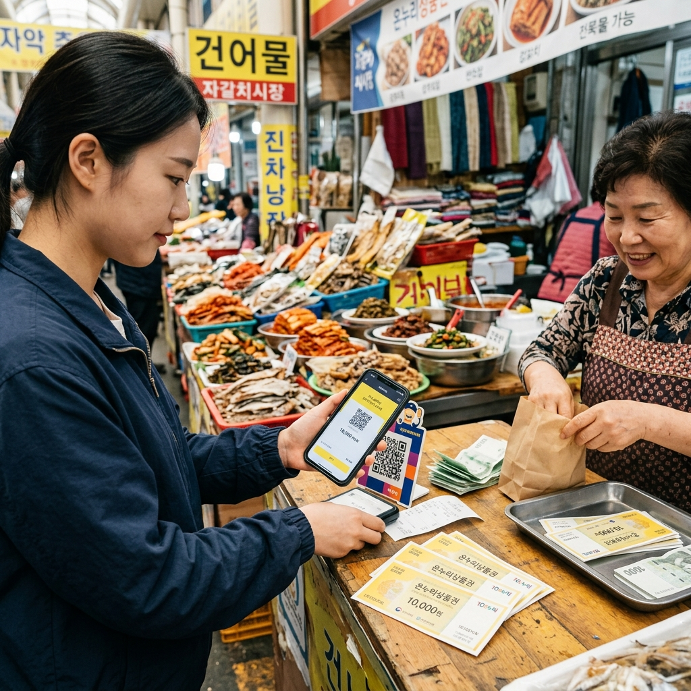
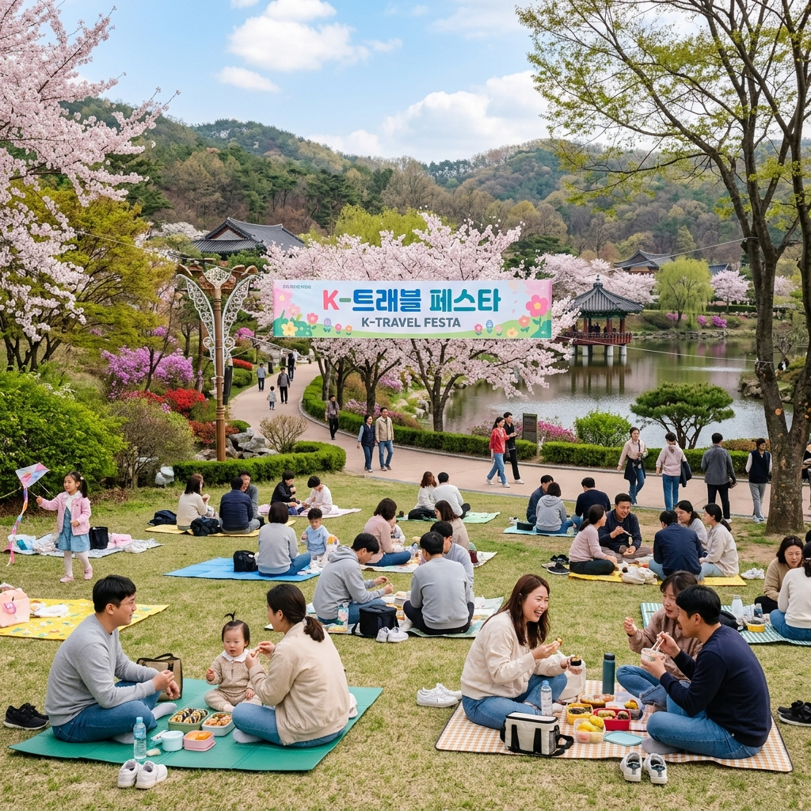

봄나?�이 물�? '비상'? ?�뜰?�게 즐기??4???�행 ?�약 ????지??��??& ?�누리상?�권 100% ?�용 가?�드
?�� 경제 ?�황: 2026??�? 고물가 기조가 ?�어지�?4??가�??�식비�? ?�박�?부?�이 ?��? ?��? ?�황?�니??
?�� ?�약 ?�인??/strong>: 무작??짐을 ?�기보다 ?��??� 지?�체?�서 ?�공?�는 봄맞???�박 ?�스?� �??�인 쿠폰??먼�? ?�점?�는 것이 중요?�니??
???�심 추천: ?��? ?�장 방문 ???��??�온?�리 ??/strong>?�나 '지??��?�상?�권'???�용?�면 최소 7~10% ?�상??비용 ?�감 ?�과�?거둘 ???�습?�다.
1. 벚꽃보다 무서???�들??물�?, ?�파구는 ?�디??
바야?�로 봄입?�다. ?�과 ?�에 꽃이 ?�어?�며 ?�리??마음???�레�?마련?��?�? 막상 ?�들??계획???�우??보면 ?�실?�인 ?�벽??부?�히�??�니?? 바로 '물�?'?�니?? ?�텔 ?�박비는 ?�년보다 ?�랐�? ?�명 관광�? 맛집??메뉴??가격도 ?�사�?? ?�죠. ?��?�??�기?�기??4?�의 ?�씨가 ?�무???�깝?�니?? 조금�?발품???�고 ?�보?�을 발휘?�다�? 지갑의 부?��? ??��면서 ?�복??지?�는 ?�일 ???�는 방법?�이 ?�처???�려 ?�습?�다.
?�늘 ???�스?�에?�는 2026???�재 ?�용 가?�한 최신 ?�책?�과 ?�전 ?�약 ?�들??밀�?취재?�여 ?�달???�리???�니?? ?�순???�끼기만 ?�는 궁색???�행???�닙?�다. ?��?가 지?�하???�양???�택???�당?�게 ?�리�? ?�똑?�고 ?�아?�게 즐기??'?�이?�드 ?�약 ?�행'??기술??지금�????�나??공개?�겠?�니??
2. 10% ?�동 ?�인! 지??��?�상?�권�??�누리상?�권??마법
1
지??��?�상?�권(카드/모바??: ?�행 목적지가 ?�해졌다�??�당 지?�체?????? 경기??착한?�이, ?�남 ?��??�락 ????미리 ?�치?�세?? 발행 ??7~10% ?�시 ?�인?� 물론, 축제 기간?�는 추�? 캐시�??�택??주어집니??
2
?��??�온?�리(?? ?�품�?/strong>: ?�통?�장?�나 ?�점가?�서 ?�용 가?�한 ???�품권�? ?�소 7%, 명절 ?�판 기간?�는 10% ?�인??가격으�?구매?????�습?�다. ?�산�??�래?�장?�나 골목 맛집?�서 결제????강력???�을 발휘?�니??
많�? 분이 ?�품�?구매가 번거�?���??�각?�시지�? ?��??�온?�리 ?�으�?1분이�?충전??가?�합?�다. ?��? ?�어 ?�성?�랜??주�? ?�당?�나 강릉 경포?� ?�근 ?�통?�장?�서 10�??�을 결제???? ?�으�?미리 충전???�품권을 ?�용?�면 ?�시 기�? 7,000?�을 즉시 ?�끼???�입?�다. 2026?�에???��???결제가 ?�욱 보편?�되???�부분의 지?�체 가맹점?�서 카드 결제만큼?�나 ?�리?�게 ?�용?�실 ???�습?�다.
?��???기기�??�용??각종 ?�인 ?�택�??��? 지?�금??꼼꼼??체크?�며 ?�행??계획?�는 모습 (AI ?�작 ?��?지)
3. '?�?��?�??�박 ?�일 ?�스?�' 200% ?�용�?/h2>
?�� ?�박�??�반?�로 줄이??마스???�략
문화체육관광�??� ?�국관광공?��? 주�??�는 ?�박 ?�인 캠페?��? 4???�들?�객???�한 최�????�물?�니??
1. ?�착??쿠폰 발급 ?�간 ?�수: 보통 ?�일 ?�전 10?�에 주요 ?�약 ???��??? ?�기?�때, ?�터?�크 ???�서 배포?�니?? ?�람 ?�정?� ?�수?�니??
2. 비수?�권 지??집중 공략: ?�구가 ?��??�으�??��? 지??�� ?�소???�인 ??�� ???�고 쿠폰 경쟁???�합?�다. ?�겨�?감성 ?�소�?찾기??최적??기회?�니??
3. 중복 ?�인 체크: ?�박 ?�스?� 쿠폰??결제??카카?�페?? ?�스 ?? 추�? ?�인???�하�?5�????�상???�질???�택??�????�습?�다.
?�히 2026??�??�즌?�는 친환�??�행(ESG)???�천?�는 ?�소??지??명소 방문 ?�증 ??추�? ?�인?��? 지급하???�로그램???�영 중입?�다. ?�박 ?�약 ?? ?�순??가격만 비교?��? 말고 ?�당 ?�의 ?�벤???�이지�?꼼꼼???�어보는 ?��????�만 ?�의 가치�? 만들?�냅?�다.
4. 고향?�랑기�??? 기�????�고 ?�성???��??�으�??�행??즐기�?/h2>
| ?�택 ??�� |
?�용 �?방식 |
?�질???�득 |
| ?�액 공제 |
10�???기�? ??10�????�액 ?�액공제 |
결정?�액 범위 ???�급 ?�택 |
| ?��????�인??/td>
| 기�? 금액??30%�?지???�인?�로 증정 |
3�????�당??지???�산�??�용�?/td>
|
| ?�행 ?�키지 ?�계 |
?��??�으�??�당 지??관�??�설 ?�용�??�택 |
?�장�?�?체험�?무료 ?�용 |
고향?�랑기�??�는 2026??지??경제 ?�성?�의 ?�심 축으�??�리 ?�았?�니?? ?�행지�??�한 지??�� 10�??�을 기�??�면, ?�말?�산 ??결제?�액 범위 ?�에??10�??�을 공제받고, 추�?�?기�? 금액??30%??3�????�당???�인?�로 ?�당 지??�� ?�명 카페 ?�용권이??체험 ?�장 ?�장권을 받을 ???�습?�다. 비록 ?�택???�현?� ?�음 ???�말?�산 ?�기?��?�? ?�기?�으�?보면 3�??�의 가치�? 미리 챙기???�이�? ?�행 ??'고향?�랑e?? ?�이??방문?� ?�제 ?�들?�의 ?�수 코스가 ?�었?�니??

?�통?�장?�서 모바??지??��?��? ?�용?�여 ?�마?�하�?결제?�고 ?�택???�리??모습 (AI ?�작 ?��?지)
5. 교통�?부??줄이�? K-?�스?� SRT/KTX 조기 ?�매
?�� ?�중교???�용객을 ?�한 교통�??�이?�트
- K-?�스 ?�용: ??15???�상 ?�중교???�용 ??지출액???�정 비율???�급??줍니?? ?�행지 ??버스??지?�철 ?�용 ?�에???�용?�니 반드??챙기?�요.
- 코레??'?�내??�?��' & '?�자?� ?�복': ?�령?�??가�??�원???�라 ?�차 ?�금??10~40%까�? ?�인받을 ???�습?�다.
- **카셰?�링 ?�도 ?�비??*: 목적지까�???기차�??�동?�고, ?��??�서???�요???�간만큼�?차량??빌려 비용??최적?�하?�요.
고속?�로 ?�행료�? ?�류비�? 부?�스?�다�??�차 ?�행???�답?????�습?�다. ?�히 2�???조기 ?�매�??�용?�면 ?��? ?��??�당??금액???�낄 ???�죠. 기차??��??관광�?까�? ?�행?�는 지?�체 ?�어 버스�??�용?�면 ?�터�?비용???�예 ?�거?????�어 ?�욱 경제?�인 ?�행??가?�해집니??
6. 무료�?즐기??고품�?문화 ?�술 축제 공략
?�리?�라??4???????�안 ?� ???�이 많�? 축제가 ?�립?�다. ?�부분의 지??축제???�장료�? 무료?�거?? ?�장권을 구매?�면 ?�일??금액만큼 지???�품권으�??�려주는 '?�질??무료' ?�책???�는 곳이 많습?�다. ?��? ?�어 ?�촌?�수???�당?�의 벚꽃 구경?� ?�전 무료?�며, ?�기???��? ?�으�??�리?�길?�나 부�?로컬 ?�장??맛있???�식??경험?�는 ???�자?�는 '?�택�?집중' ?�략???�요?�니??
7. ?�경???�각?�는 '그린 ?�행'?�로 ?�인받기
최근 많�? �?��공원�??�목?�에?�는 개인 ?�블러�?지참하거나 ?�회?�기�??�용?�는 방문객에�??�장�??�인?�나 ?�료 쿠폰???�공?�는 친환�?캠페?�을 벌이�??�습?�다. ?�레기�? 줄이??미니멀 캠핑?�나 ?�들?�는 ?�경?�도 좋�?�? 불필?�한 ?�회?�품 구매 비용??줄여주는 경제?�인 ?�과???�죠. 배낭 ?�에 ?��? 물병 ?�나, ?�수�????�을 챙기??것이 가??멋진 ?�들??준비물?�니??

?�름?�운 ?�연 ?�에??불필?�한 ??�� ?�이 ?�유�?�� 봄날??만끽?�는 가족들??모습 (AI ?�작 ?��?지)
8. 봄나?�이 물�? 극복???�한 ?�천 ?�칙 3계명
A.
?�보가 �??�이??/strong>: 지?�체 공식 ?�페?��??� SNS�?구독?�여 ?�시간으�??�아지???�벤???�보�??�제?�으�??�악?�세??
B.
분산???�이??/strong>: ?�들????가???�크 ?�?�과 메인 ?�소�??�해 ?�겨�?명소�?발굴?�면 비용�??�트?�스가 ?�시??줄어??��??
C.
기록???�이??/strong>: ?�행 ???�수증을 챙겨 리뷰 ?�벤?�에 참여?�거???��???관광주민증 ?�택???�인?�여 ?�음 ?�행???�산?�로 만드?�요.
9. 총평: 지?�롭�??�는 ?�이 진정???�복??만듭?�다
물�?가 ?�랐?�고 ?�서 ?�리??봄날??�??�에?�만 보낼 ?�는 ?�습?�다. ?�중???�람�??�께 ?�누???�간??가치는 �?무엇과도 바�? ???�기 ?�문?�니?? ?�만, ?�늘 ?�펴�??�양???�택?�을 ?�극?�으�??�용?�여 '가?�비'?� '가?�비'�?모두 ?�는 ?�마?�한 ?�비?��? ?�어보시�??�안?�니?? ?��? 비용?�로 ??맛있???�철 ?�식???�누�? ??깊�? ?�?��? ?�누??�? 그것??바로 2026??봄을 가???�벽?�게 즐기??방법?�니?? ?�러분의 모든 ?�들?��? 경제?�으�??�요�?�� 마음?�로???�뜻?�기�?진심?�로 ?�원?�니??
?�� 4???�행 ?�약 ?�심 체크 리스??/strong>
- ?�품�?체크: ?��??�온?�리/지??��?�상?�권 충전 ?�료?
- 쿠폰 ?�점: ?�박 ?�일 ?�스?� & 교통 ?�인�??�보 ?�료?
- 기�? ?�계: 고향?�랑기�???참여�??�말?�산 ?�택 준�??�료?
- 로컬 ?�택: 방문 지???��???관광주민증 발급 ?�료?
지?�로???�기 ?��?만큼?�나 중요??것이 ?�중???�비???�명?�니?? ?�번 ?�들?�에???�용???�트??캠핑 기어??미세먼�? 관리�? 고�??�시?�면, ?�문가???�길???�한 ?�기?�인 케?�로 ?�중??추억?????�래 간직??보세?? 깨끗?�진 ?�비?� ?�께?�면 ?�음 ?�행??발걸?�도 ?�욱 가벼워�?것입?�다.
관?��?: ?�성?�랜???�채�?축제 ?�시�?가?�드 ???�도�??��? 물결
관?��?: ?�안 ?�계?�립꽃박?�회 2026 ?�리�????�리버드 ?�매 꿀??/a>
#봄나?�이물�?
#?�행비용?�약
#?��??�온?�리
#?�누리상?�권?�인
#지??��?�상?�권
#고향?�랑기�???/span>
#?�박?�일?�스?�
#4?�나?�이
#?�말?�산꿀??/span>
#짠테?�여??/span>